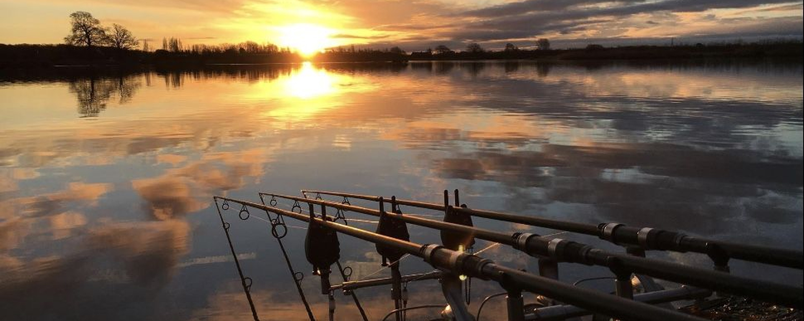

Рыбалка для многих просто хобби. Ловля рыбы, река — это картина многих на рыбалке, но, по моему мнению, рыбалка — это наука, где сосредоточено множество сфер наук: биология (рыбы), география (речная система, водоёмы), физика (форма поплавка для более дальнего заброса). Многие думают, что рыбалка — это просто поплавок в воде, но так думает лишь незнающий, и я хочу вам поведать о глубине рыбалки.

Пункты, по которым мы пройдёмся:
- Почему рыбалка — не простое хобби
- Почему рыбалка интересует людей
- Начнём изучать рыбалку от глади до глубин
- Как начать и не сдаться
- Итоги и моё напутствие
Почему рыбалка — не просто хобби:
Почему? Приведу пример: рисование в целом — это бумага и карандаш. Рисование кажется простым —
водишь по бумаге, и получается рисунок,
но если углубляться в рисование, ты понимаешь его многогранность:
тени, полутени, блики, отражение, штрихи. Рисование обретает сложность тогда, когда мы сами готовы углубляться.
Так же и с рыбалкой.
Можно ходить к реке и бросать поплавок с крючком, на котором червь, и удивляться, почему не клюёт.
Это ошибка, так как рыбалка требует потраченного времени не только на самом водоёме, но и на её изучение.
Почему рыбалка интересует людей:
Почему? Чаще всего рыболовами становятся те люди, которые ловят рыбу. В далёкие времена жизнь наших предков зависела от охоты или рыбалки: рыбалка — это давний способ раздобыть еду, еда — жизнь, еда — счастье. Так же и в современном мире — только прежней нужды в еде, как у наших предков, нет, но это не лишает рыболовов жажды рыбалки.
Что сейчас с рыбалкой
Сейчас рыбалка стала как вода, утоляющая жажду охоты современных мужчин. Также на рыбалке тебя никто не тронет. Ты один с водой и снастями, а может даже и с рыбой. Лишь изредка к тебе могут подойти рыбаки или просто интересующиеся люди насчёт клёва и рыбы. Это также азарт, но не тот, что в казино, а тот, который лишь подогревает твой интерес к рыбалке. Словил редкий вид рыбы на новом водоёме? К примеру, хариуса. В следующие часы ты будешь как фанатик бегать по местам и прочёсывать своим спиннингом каждую яму на наличие другого вида, а после рыбалки ты будешь жалеть, что не поставил ту самую блесну на хариуса, и ждать поездки на водоём как школьник лето.
Кстати, по моему субъективному мнению, среди рыболовов преимущественно мужчины, потому что, как мы разобрали ранее, мужчина — это добытчик.
Начинаем изучать рыбалку от глади до глубин
После введения мы начинаем новый раздел изучения рыбалки. Мы начнём углубляться уже в саму ловлю. Хочу сказать: главное — не стоит всё заучивать. Так как информации будет много, это может вас оттолкнуть. Не пугайтесь, на самом деле всё просто. Стоит лишь будет перейти к практике после изучения.
Термины
Тест удилища — это рекомендуемый вес приманки или оснастки, который можно безопасно забросить этим удилищем. Обычно он указывается прямо на бланке в граммах (например, 5–20 г) Как работают эти цифры: • Нижняя граница (например, 5 г): минимальный вес, при котором удилище при забросе начнёт правильно сгибаться («загружаться») и нормально посылать приманку вдаль, а вы будете чувствовать её в руке. • Верхняя граница (например, 20 г): максимальный вес, который можно забрасывать силовым броском без риска сломать удилище. Проще говоря: если тест 5–20 г, то приманка весом 3 г полетит плохо и близко, 12–15 г полетят идеально, а груз в 35 г при резком забросе может просто сломать кончик удочки.
Строй удилища — это то, как сильно и в какой части оно изгибается под нагрузкой. Он определяет, для каких приманок лучше подходит удочка, насколько далеко она бросает и как хорошо удерживает рыбу при вываживании. Простыми словами, есть четыре основных варианта: • Сверхбыстрый (Extra Fast): гнётся только самый кончик (как хлыст). Отлично подходит для джига — вы идеально чувствуете, как приманка стучит по дну, и делаете резкую подсечку. • Быстрый (Fast): гнётся верхняя треть удилища. Самый универсальный вариант для спиннинга и фидера: хорошо подходит и для заброса, и для рывковой проводки воблеров, и для подсечки. • Средний (Moderate / Regular): удилище гнётся примерно до середины. Хорошо «вяжет» рыбу (не даёт ей сойти, гася рывки как пружина) и отлично подходит для блёсен. • Медленный (Slow): гнётся почти от самой ручки, как прутик. Позволяет максимально далеко и плавно забросить лёгкую приманку, но хуже подходит для резких рывков и просекания жёсткой пасти судака.
Снасти
Снасти — это ваше снаряжение и виды ловли, о которых мы поговорим позже. Из чего состоит снасть: удилище (ваша удочка), катушка, леска. Это три базы для удочки, которая в будущем поможет вам ловить. Удилище — это основная конусообразная часть рыболовной удочки (от комля до вершинки), предназначенная для заброса оснастки, подсечки и вываживания рыбы. Основные виды удилищ: • Поплавочные: маховые, болонские, матчевые и штекерные. • Донные: фидерные (со сменными вершинками-квивертипами), пикерные и карповые. • Спиннинговые: для ловли хищной рыбы на искусственные приманки (включая кастинговые и джерковые). • Специализированные: нахлыстовые, зимние, морские и троллинговые. Из чего их делают: • Карбон (углепластик): лёгкий, прочный, с высокой чувствительностью. • Стекловолокно: более тяжёлое, но очень гибкое и недорогое. • Композит: сочетает свойства стекловолокна и углепластика. • Длина: от компактных вариантов до 18 метров (например, штекерные). • Тест: диапазон веса приманки или оснастки, на который рассчитан бланк. • Жёсткость и строй: определяют, как изгибается удилище при нагрузке и забросе. • Рыболовная катушка — устройство для хранения, подачи и сматывания лески на удилище. • Основные виды: • Безынерционные («мясорубки» — самые популярные, подходят для новичков и разных видов ловли). • Инерционные (классические простые модели). • Мультипликаторные (мощные катушки лебедочного типа для тяжелых снастей). • Ле́ска — любой шнур, предназначенный для ловли рыбы. • Служит основой для рыболовных снастей, соединяя все части оснастки в единую снасть. • Позволяет забрасывать в водоём снасть с приманкой, подсекать и вываживать рыбу. • Различают монофильные лески и многоволоконные.
Поплавочные удилища
В основном 4 вида ловли 1. Маховая ловля (мах) • Особенности: самый популярный и классический вид. Удилище телескопическое, без колец и катушки. Оснастка «глухая» — леска крепится напрямую к коннектору на вершинке. • Дистанция: ближняя и средняя (длина удилища обычно от 5 до 8 метров). • Применение: стоячая вода или слабое течение, ловля с берега или с лодки на коротких и средних расстояниях. Отлично подходит для скоростной ловли мелкой и средней рыбы. 2. Болонская ловля (болонка) • Особенности: телескопическое удилище с пропускными кольцами на высоких ножках и безынерционной катушкой (обычно с задним фрикционом). • Дистанция: средняя и дальняя (30–40 метров и более). • Применение: создана специально для рек с течением. Кольца и катушка позволяют отпускать леску по течению, контролируя проводку на большом расстоянии. 3. Матчевая ловля (матч) • Особенности: штекерное (обычно 3-частное) удилище высокой жёсткости, оснащённое специальной безынерционной катушкой и тяжёлыми аэродинамичными поплавками (часто со своей огрузкой). Поплавок скользящий или фиксированный. • Дистанция: дальняя (комфортно от 20 до 35 метров, вплоть до 60–70 метров). • Применение: озёра, водохранилища и каналы без течения или со слабым течением. Позволяет добросить лёгкую приманку далеко от берега на нужную глубину. 4. Штекерная ловля (штекер) • Особенности: очень длинное удилище (от 9 до 14–20 метров), состоящее из множества выдвижных колен. Оснастка короткая, внутри кончика находится амортизационная резина. • Дистанция: строго определённая длиной штекера (заброс как таковой отсутствует, удилище подаётся вперёд). • Применение: спортивная рыбалка в сложных условиях, когда нужно удерживать приманку в конкретной точке на сильном течении или ветру с ювелирной точностью.
Доночные удилища
1. Фидерные удилища (фидер) Самый популярный и универсальный вид современных донок для ловли с кормушкой на средних и дальних дистанциях. • Конструкция и индикация. Штекерный бланк (обычно из 3 секций) с комплектом сменных гибких вершинок разной жёсткости — квивертипов. Поклёвку отслеживают именно по изгибу или дрожанию этой вершинки. • Параметры. Длина составляет от 3,3 до 4,2 метра, а тест варьируется от 40 до 150–180 граммов. • Классы мощности. Делятся на лёгкие (Light), средние (Medium), тяжёлые (Heavy) и сверхтяжёлые (Extra-Heavy). Это позволяет подобрать бланк как для спокойного озера, так и для реки с сильным течением. 2. Пикерные удилища (пикер) Облегчённая, деликатная версия фидера, созданная для коротких дистанций и стоячей воды. • Конструкция. Лёгкий 2-частный бланк со сменными чувствительными вершинками, как у фидера. • Параметры. Короткая длина (от 2,4 до 3,0 метров) и малый тест — обычно до 30–40 граммов. • Применение. Ловля некрупной и средней рыбы (плотва, карась, подлещик) на прудах, озёрах или у самого берега без использования тяжёлых кормушек. 3. Карповые удилища (карповики) Мощные силовые удилища для трофейной рыбалки и сверхдальних забросов. • Конструкция. Прочный 2- или 3-частный бланк с крупными пропускными кольцами и без сменных вершинок. Поклёвка регистрируется отдельными электронными сигнализаторами или свингерами. • Параметры. Длина обычно 3,6–3,9 метра. Мощность измеряется не в граммах, а в фунтах (lbs) и показывает нагрузку, при которой вершинка сгибается под углом 90 градусов (обычно от 2,5 до 4,0 lb, что позволяет кидать грузы 90–140 г на 100+ метров). • Специализированные подвиды карповиков: • Сподовые (Spod). Сверхмощные удилища (до 5–6 lb) для заброса тяжёлых ракет с прикормкой в точку ловли. • Маркерные (Marker). Жёсткие чувствительные бланки для прощупывания рельефа дна и определения глубины.
Спиннинговые удилища
Тут не просто виды, а уже приманка привязана к тесту. 1. Классификация по тесту (весу приманок) Тест — главный параметр, который показывает минимальный и максимальный вес приманки для комфортного заброса без поломки бланка. • Ультралайт (Ultra Light, UL): тест обычно до 5–7 граммов. Применяется для ловли мелкой и средней рыбы (окунь, голавль, форель, хариус) на сверхлёгкие блёсны, воблеры и микроджиг. • Лайт (Light, L): тест от 3–5 до 12–15 граммов. Универсальный лёгкий класс для небольших рек, озёр и некрупного хищника. • Медиум-лайт (Medium-Light, ML) и Медиум (Medium, M): самые популярные универсальные классы с тестом примерно от 5–7 до 21–28 граммов. Подходят для ловли щуки, судака и крупного окуня с берега или лодки на большинство типов приманок. • Медиум-хэви (Medium-Heavy, MH) и Хэви (Heavy, H): мощные удилища с тестом от 15 до 50–60 граммов. Нужны для тяжёлого джига на больших реках с сильным течением и охоты за трофейной щукой или судаком. • Экстра-хэви (Extra-Heavy, XH): сверхмощные бланки с тестом от 50–60 граммов и выше (вплоть до 150–200 г). Используются для ловли на гигантские силиконовые приманки (бигбейты), джеркбейты или для троллинга. 2. Классификация по строю (гибкости бланка) Строй показывает, какая часть удилища изгибается под нагрузкой и как быстро бланк возвращается в исходное положение. • Сверхбыстрый (Extra Fast): гнётся только самый кончик (верхняя четверть бланка). Идеален для джига, так как даёт максимальную чувствительность «в руку» и позволяет чётко контролировать касание дна. • Быстрый (Fast): гнётся верхняя треть удилища. Самый универсальный строй, который одинаково хорошо подходит для джига, твичинга воблеров и блёсен. • Средний (Moderate / Regular): изгибается примерно половина бланка. Отлично работает на вываживании, гася рывки рыбы, и хорошо подходит для равномерной проводки кренков и вращающихся блёсен. • Медленный (Slow): бланк гнётся почти от самой рукояти. Обеспечивает самый дальний заброс лёгких приманок и минимум сходов, часто применяется в форелевой рыбалке (Area-ловля). 3. Классификация по типу катушки • Классические (спиннинговые): рассчитаны на работу с безынерционной катушкой. Пропускные кольца у них крупные (особенно входное), а на рукояти нет выступающего «курка». • Кастинговые (бейткастинговые): предназначены для мультипликаторных катушек. На катушкодержателе есть специальный выступ («курок» или триггер) для удобного хвата, а пропускные кольца мелкие и стоят на низких ножках. 4. Специализированные типы спиннингов • Джиговые: бланки с жёстким комлем и очень чувствительной вершинкой (полой Tubular или вклеенной Solid) для проводки по дну. • Твичинговые: относительно короткие (обычно 1,9–2,2 м) и жёсткие удилища, которые не проваливаются при резких рывках воблеров. • Твич-стримовые и форелевые (Area и Stream): деликатные удилища для платных прудов (Area) или быстрых горных рек и ручьёв (Stream). • Тревел-спиннинги (Travel): многочастные (обычно 4–5 секций) или телескопические модели, которые легко помещаются в рюкзак или чемодан для путешествий.
Виды ловли
Виды ловли: 1. Поплавочная ловля Классический и самый доступный вид рыбалки на мирную, а иногда и хищную рыбу. • Суть метода. Приманка удерживается в нужном слое воды с помощью поплавка, который служит главным сигнализатором поклёвки. • Основные направления. Маховая, болонская, матчевая и штекерная ловля, а также азиатская херабуна. 2. Донная ловля (донка) Ловля рыбы со дна водоёма на дальних и средних дистанциях без использования поплавка. • Суть метода. Тяжёлое грузило или кормушка удерживает насадку на дне, а поклёвка фиксируется по изгибу гибкой вершинки удилища, колокольчику или электронному сигнализатору. • Основные направления. Современный фидер, лёгкий пикер, трофейный карпфишинг и классическая «закидушка». 3. Спиннинговая ловля Активная охота на хищную рыбу (щуку, судака, окуня, жереха, голавля) с помощью искусственных приманок. • Суть метода. Рыболов постоянно забрасывает приманку и выполняет её проводку, имитируя движение раненой рыбки, насекомого или рачка. • Основные направления. Джиг, твичинг воблеров, ловля на блёсны, ультралайт, микроджиг и кастинг (ловля с мультипликаторной катушкой).
И это лишь бланки. Я расписал все о бланках, а теперь твоя задача это продолжать изучать и позже применять уже на водоеме.
Как начать и не сдаться
Собери удочку по гайдам на YouTube, но для начала узнай, какая рыба водится в пабликах ВК и на водоёмах вблизи тебя, к которым ты можешь ходить или ездить на рыбалку. Узнай о рыбе, глубине, течениях.Главное — выбирай вид ловли по тому, какая рыба ловится возле твоих водоёмов. Узнавай у рыбаков, как у них по клёву и на что ловят: общение — это ключ к знанию водоёма. Не мелочись: лучше потрать один раз десять тысяч, чем пять тысяч три раза, и пойми, твоё это или не твоё. Продолжай изучать рыбалку, читая и смотря видео, и закрепляй на практике.
Итог: рыбалка не просто хобби это целый мир!
Рыбалка вытаскивает нас из современной суеты из мыслей что вредят. Изучай, рыбачь, все получиться, у меня получилось и у тебя получится